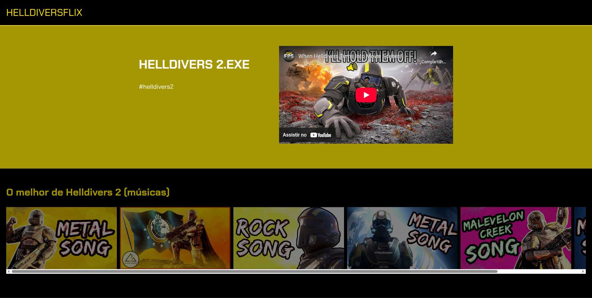
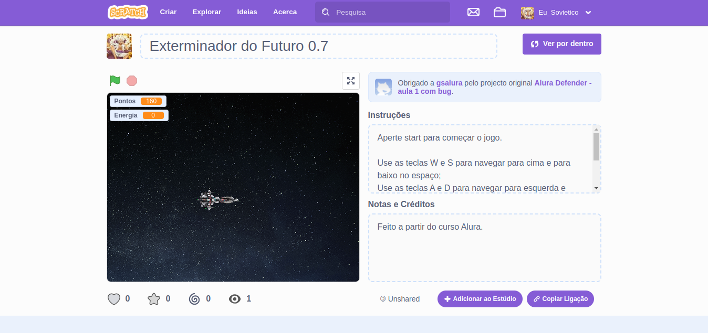
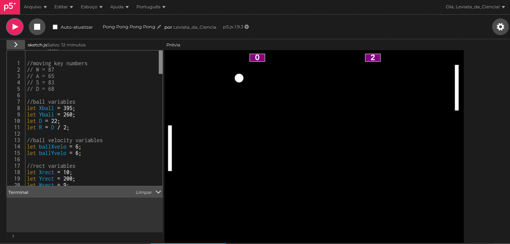

Meus projetos

Minha Biblioteca: Uma Webpage Personalizada
Este projeto é uma página web que apresenta uma lista contendo coisas sobre o tema que eu gosto, o jogo Helldivers 2. Nesta biblioteca contém um vídeo de gameplays aleatórias e engraçadas para apresentar o jogo e logo abaixo pode-se ver músicas inspiradas no jogo.

Exterminador do Futuro-0.7
Este projeto é um jogo interativo com naves espaciais onde você precisa proteger o planeta Terra dos alienígenas.

Um jogo de Ping Pong no JavaScript.
Este projeto consiste em um jogo de Ping Pong onde você joga contra o computador.